24 Ağustos
O gün uzun zamandır içimde taşıdığım bir ağırlık kalktı. Seninle yeniden başlamak benim için uzun uzun düşünüp verdiğim bir karar değildi. Sensiz geçen her gün bir şey eksikti, o gün o eksik yerine geldi.
Bu özel sayfaya erişmek için şifreyi gir sevgilim... ❤️
4. Ay
SEVGİLİ EBRU'YA · DÖRDÜNCÜ AY
Bu ay sana yeniden döndüm,
ve aylar sonra ilk defa sana sarıldım.
YENİDEN BAŞLANGIÇ
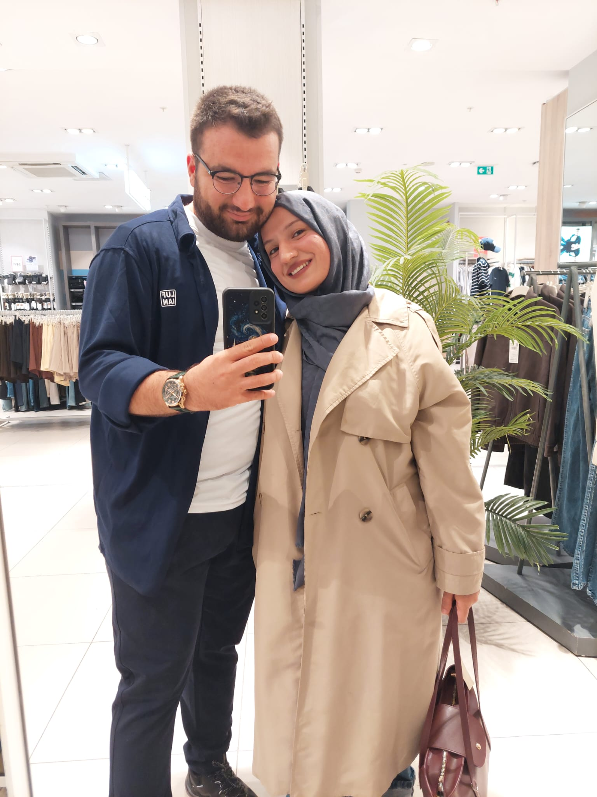
Bu ay çok şey oldu. 24 Ağustos'ta yeniden "biz" dedik. 18 Eylül'de, aylardır yalnızca telefonda gördüğüm yüzün karşımdaydı. 20 Eylül'de karşılıklı oturup ilk kahvemizi içtik. 23 Eylül'den beri de okula gittiğimiz her gün yan yanayız. Bütün bir yazı ayrı geçirdikten sonra bunu yazabilmek bile beni mutlu ediyor.
Seni yeniden bulduğum ay.
Bir daha kaybetmeye hiç niyetim yok.
23 AĞUSTOS - 23 EYLÜL 2026
Tamamlandı · 120 Gün
Bölüm I
Kavuştuğumuz günden okul günlerine.
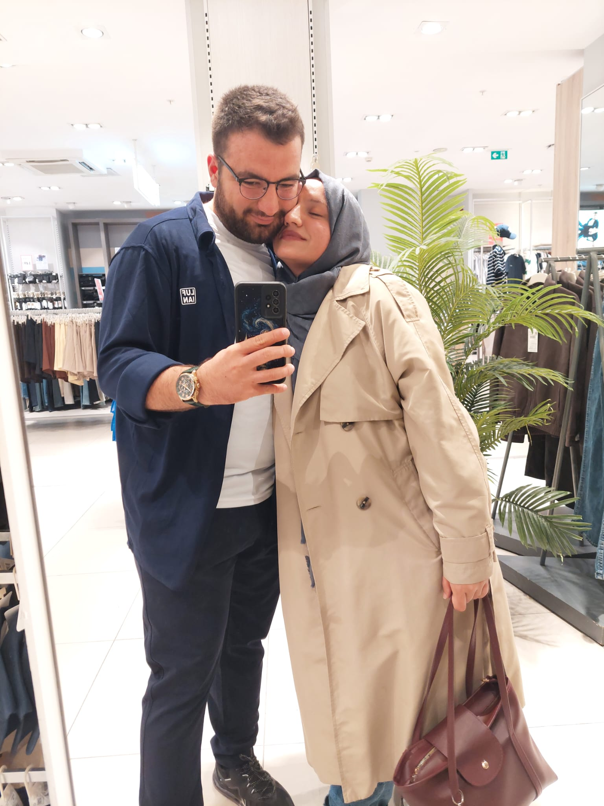
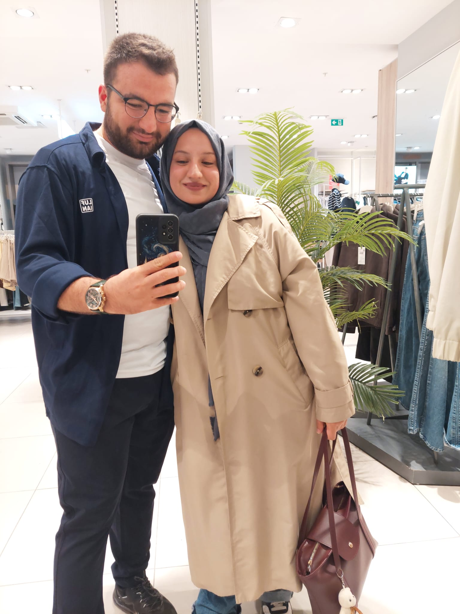
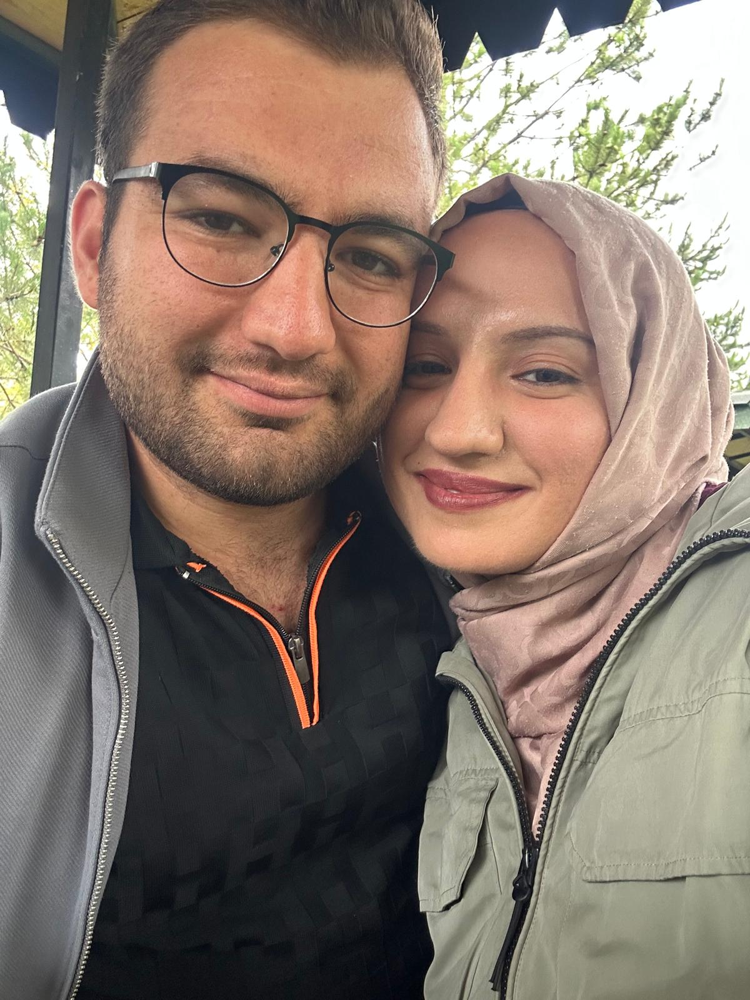
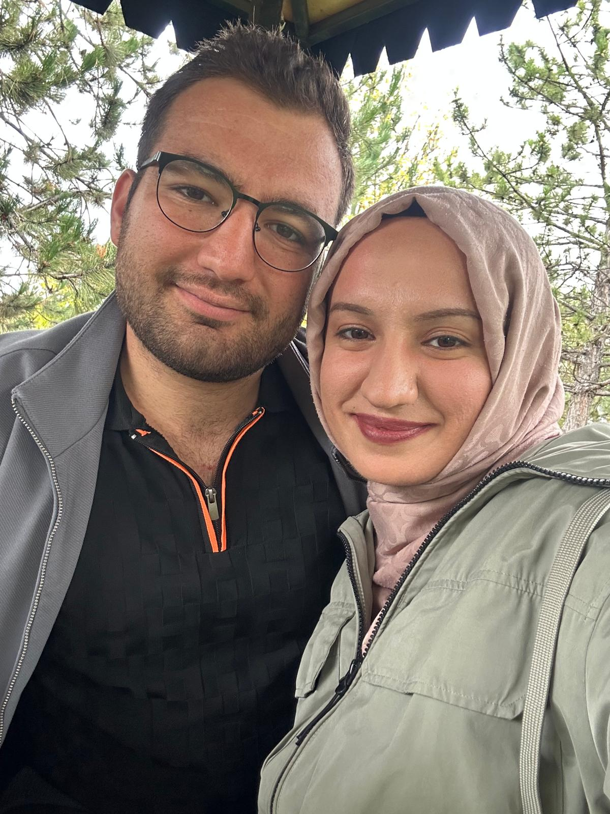
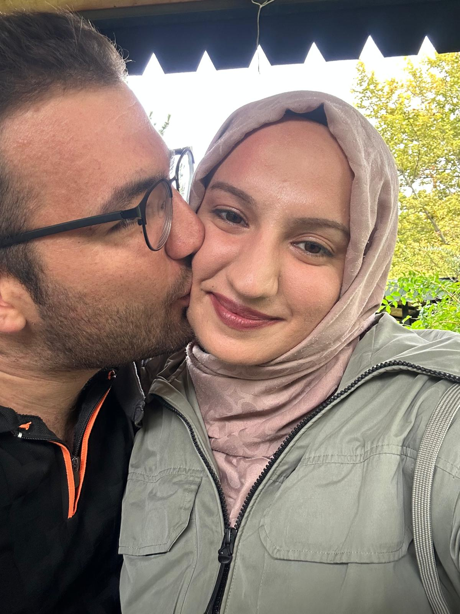
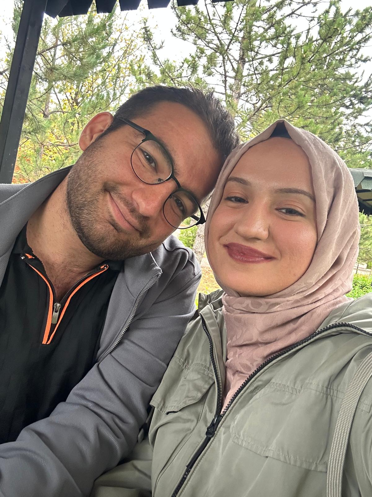
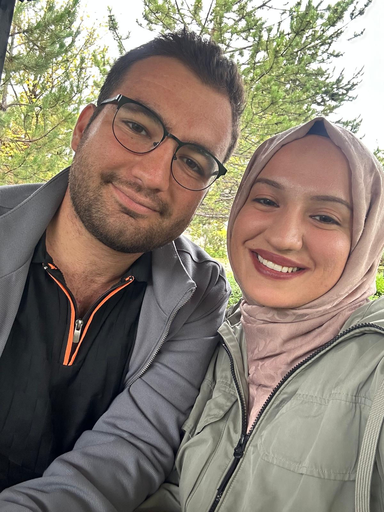
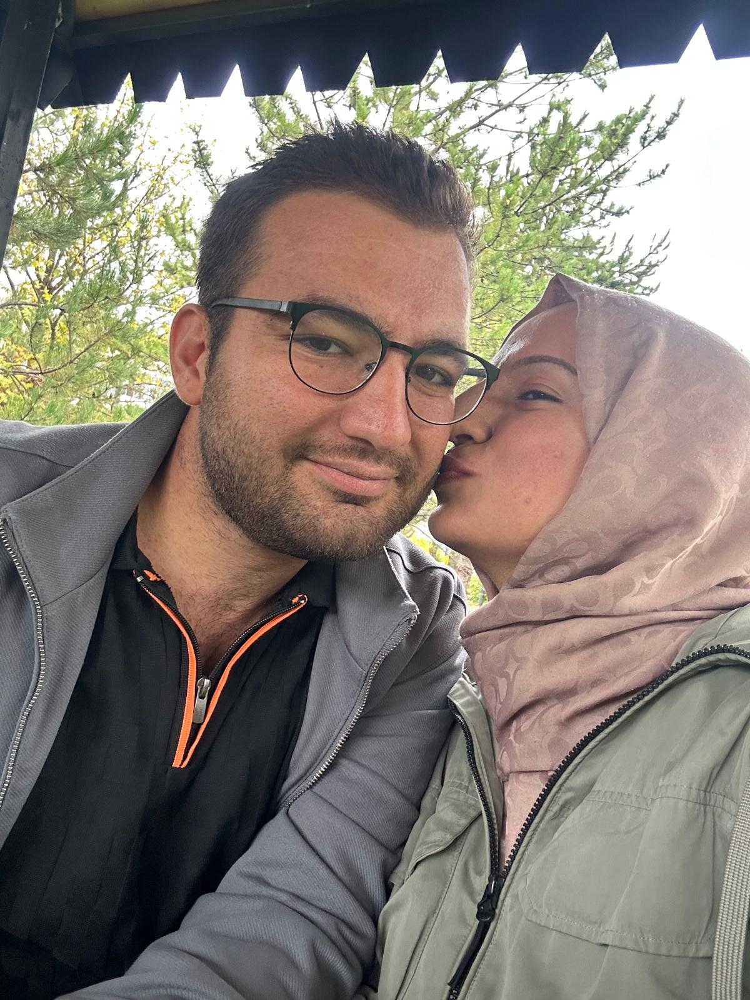
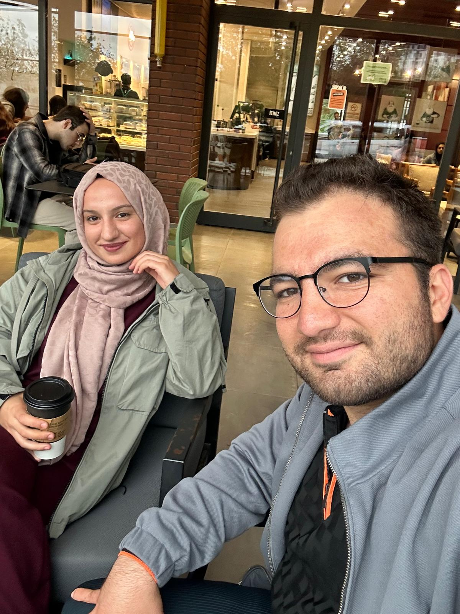
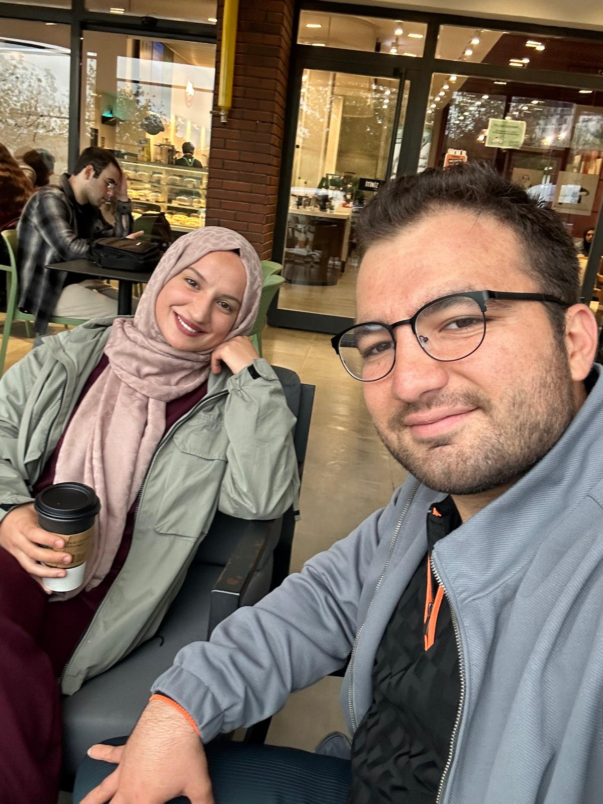
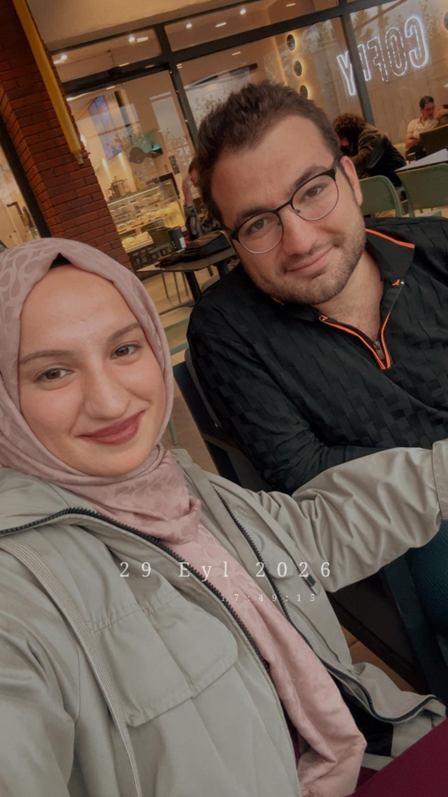
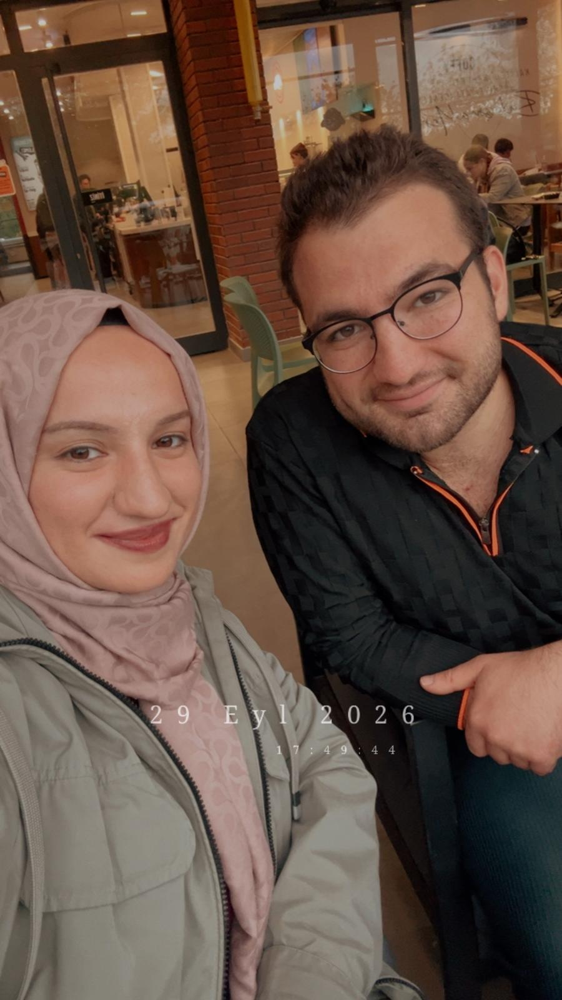
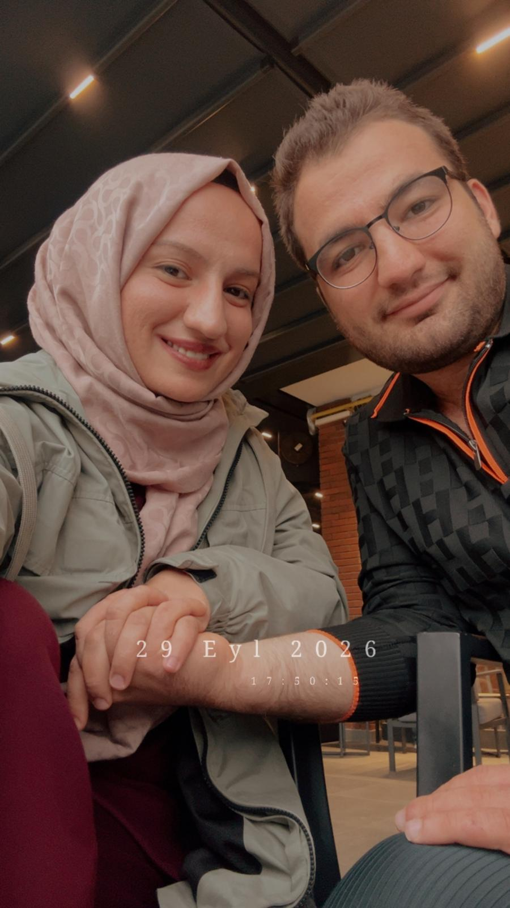
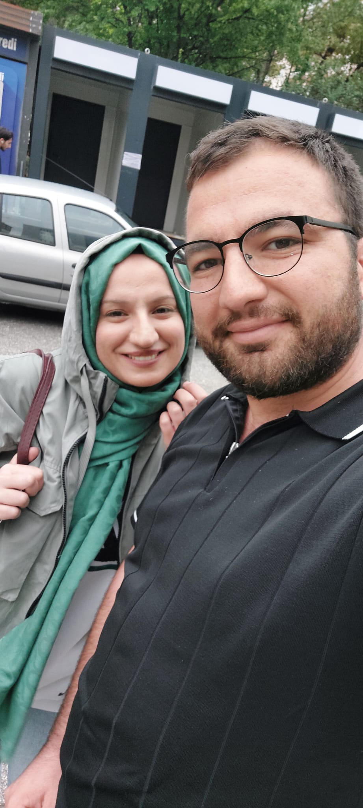
Dördüncü Ayın Yolu
Bu ayın tarihleri, bir de o günlerde hissettiklerim.
24 Ağustos
O gün uzun uzun konuştuk. Ayrı kaldığımız sürede ikimiz de birbirimizi düşünmeyi bırakamamışız. Bunu birbirimize söylediğimiz an çok şey hafifledi. Yeniden "biz" demek, o yaz başıma gelen en güzel şeydi.
18 Eylül
Seni karşımda gördüğümde bir an ne yapacağımı bilemedim. Haftalardır ne diyeceğimi düşünmüştüm, hiçbirini söyleyemedim. Aylardır ilk defa sesin bir ekrandan değil, hemen yanımdan geliyordu.
20 Eylül
Karşılıklı oturup kahve içtik. Dışarıdan bakan biri için sıradan bir buluşmaydı belki, benim içinse aylarca hayalini kurduğum şeydi. Ne konuştuğumuzun çoğunu hatırlamıyorum. Senin yüzünü hatırlıyorum.
23 Eylül
Bu tarihten beri okula gittiğimiz her gün birlikteyiz. Bütün bir yazı ayrı geçirdikten sonra aynı yerde, aynı saatlerde olmak bana hâlâ hak ettiğimiz bir ödül gibi geliyor. Ve bu daha başlangıç.
Bölüm II
Bu aydan aklımda kalanlar.
O gün uzun zamandır içimde taşıdığım bir ağırlık kalktı. Seninle yeniden başlamak benim için uzun uzun düşünüp verdiğim bir karar değildi. Sensiz geçen her gün bir şey eksikti, o gün o eksik yerine geldi.
Kavuşmayı hep filmlerde görmüştüm. Kendi başıma gelince filmlerin bunu biraz eksik anlattığını anladım. Seni gördüğüm an etrafta kim var, ne oluyor, hiç fark etmedim. Sana sarıldım ve uzun süre bırakmak istemedim.
Eskiden okul günleri bana sıradan gelirdi. Şimdi ders aralarında yanına gelmek, çıkışta bir kahve içip biraz daha oturmak günün en sevdiğim kısmı. Hafta sonu gelince en çok bu sıradan günleri özlüyorum.
Bölüm III
Bu ayı anlatan birkaç dize, bir de benden birkaç satır.
I
Terketmedi sevdan beni,
Aç kaldım, susuz kaldım,
Hayın, karanlıktı gece,
Can garip, can suskun,
Elin elimdeydi yine.
II
Seni bulmaktan önce aramak isterim.
Seni sevmekten önce anlamak isterim.
Seni bir yaşam boyu bitirmek değil de,
Sana hep, hep yeniden başlamak isterim.
III
Seni düşünürken
bir çakıl taşı ısınır içimde,
bir kuş gelir yüreğimin ucuna konar,
bir gelincik açılır ansızın.
IV
ayrı geçen günlerde
adını kimseye anmadım
ama her gece aklımdan geçtin
yeniden konuştuğumuz gün
uzun bir yoldan eve dönmüş gibiydim
yorgun ama çok mutlu
V
aylarca telefonda gördüğüm yüz
o gün omzumdaydı
gözlerini kapattın
ben de bir şey demedim
o birkaç saniyeyi
hiçbir kelimeyle bozmak istemedim
VI
karşılıklı oturduk
sen kahveni karıştırırken ben sana baktım
ne konuştuğumuzu hatırlamıyorum
yalnızca o masada
aylardır ilk defa
hiçbir şeyi özlemediğimi hatırlıyorum
VII
ne kadınlar sevdim zaten yoktular
yağmur giyerlerdi sonbaharla bir
azıcık okşasam sanki çocuktular
…
böyle bir sevmek görülmemiştir
Bölüm IV
Bu ayı sana bir de böyle anlatmak istedim.
Canım Ebru'm,
Bu mektubu birkaç gündür yazmaya çalışıyorum. Her oturduğumda aklıma başka bir şey geliyor, yazdığımı silip baştan başlıyorum. Sana bu ayı anlatmak istiyorum ama aslında anlatmak istediğim şey bu aydan çok daha büyük. O yüzden biraz uzun olacak, şimdiden kusura bakma.
Bu yaz senden ayrı kaldığım günleri düşünüyorum bazen. Bir süre birbirimizden de uzak durduk, biliyorsun. O günlerde kendime iyi olduğumu söyledim, kimseye de belli etmedim. Ama gece olunca elim telefona gidiyordu. Ne yazacağımı bilmeden ekranı açıp kapattığım çok oldu. Sonra senin de beni düşünmekten vazgeçemediğini öğrendim ve ilk defa bir şeye hem bu kadar sevinip hem bu kadar üzüldüm. Sevindim, çünkü yalnız değilmişim. Üzüldüm, çünkü ikimiz de bunu bu kadar geç söylemiştik.
24 Ağustos'ta konuştuğumuzda içimde bir düğüm çözüldü. Ne kadar konuştuk hatırlamıyorum. Hatırladığım şey, telefonu kapattıktan sonra bir süre öylece oturduğum. Gülümsüyordum ve neden gülümsediğimi kendime açıklamama gerek yoktu.
Sonra 18 Eylül geldi. Hazırlanırken aynaya kaç kere baktım bilmiyorum. Yolda ne diyeceğimi kafamda kurup durdum, karşına geçtiğim an hepsi aklımdan uçtu ve hiç umurumda olmadı. Aylardır bir ekranın arkasında duran kız oradaydı, gülüyordu, gerçekti. Ben o gün seni yeniden tanıdım Ebru, ve ikinci kez aynı kıza âşık oldum.
20 Eylül'deki kahve için sana hiç söylemediğim bir şey var. O masaya oturmadan önce o anı kafamda belki yüz kere yaşamıştım. Nerede oturacağımızı, senin ne içeceğini, ilk ne söyleyeceğini düşünmüştüm. Gerçeği hayal ettiğimden çok daha güzeldi, çünkü hayalimde senin o gün anlattıkların yoktu, sesinin o masadaki hâli yoktu.
Okulun açıldığı günden beri hafta içi seni görmediğim bir gün olmadı. Sabah evden çıkarken artık sadece okula gitmiyorum, sana gidiyorum. Yorgun olduğum günler de oluyor, derslerden sıkıldığım günler de. Ama gün içinde yüzünü görünce gerisi kendiliğinden düzeliyor. 29 Eylül akşamı kafede elini tuttuğumda bir an durup düşündüm: Birkaç ay önce bu masayı, bu eli, bu akşamı hayal bile edemiyordum.
Sana büyük sözler vermek istemiyorum. Kötü bir gün geçirdiğinde yanında olacağım, sinirlendiğinde de lafını kesmeden dinleyeceğim. Bunlar küçük şeyler gibi görünüyor ama ben artık en önemli şeylerin küçük şeyler olduğunu biliyorum. Ayrı kaldığımız o günler bana bir şey daha öğretti: İnsan bazı şeyleri inat yüzünden kaybedebiliyor. Ben seni bir daha ne inatla, ne gururla, ne de yanlış anlaşılmış bir cümleyle kaybetmeyeceğim.
Seni seviyorum Ebru. Yazın uzaktayken de seviyordum, ayrı kaldığımız günlerde de. Ama şimdi, yan yana geçirdiğimiz her günün sonunda bu sevginin biraz daha büyüdüğünü görebiliyorum. Bu mektubu okurken yanındaysam, bitirince başını kaldırıp bana bak. Yazamadığım ne kaldıysa gözlerimde görürsün.
Hep seninle,
Furkan